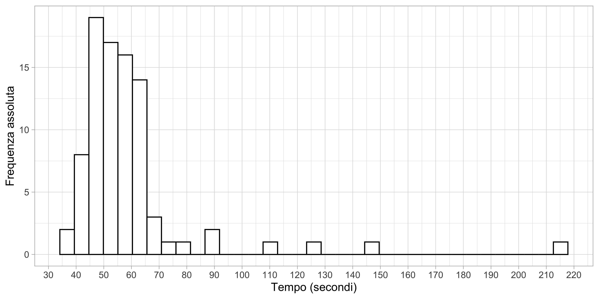
39esimo Campionato di sci ANCIU
San Martino di Castrozza (TN) - 28 gennaio - 4 Febbraio 2024
Autore/Autrice
Tommaso Rigon
Data di Pubblicazione
1 febbraio 2024
Classifica per ateneo
Classifica complessiva per disciplina
Slalom gigante femminile
Tempi di arrivo (Gigante, Femminile)
| Tempo migliore | Primo quartile | Tempo mediano | Terzo quartile | Tempo peggiore |
|---|---|---|---|---|
| 36.36 | 48.03 | 53.97 | 60.78 | 214.8 |
Numero di partecipanti per ateneo (Gigante, Femminile)
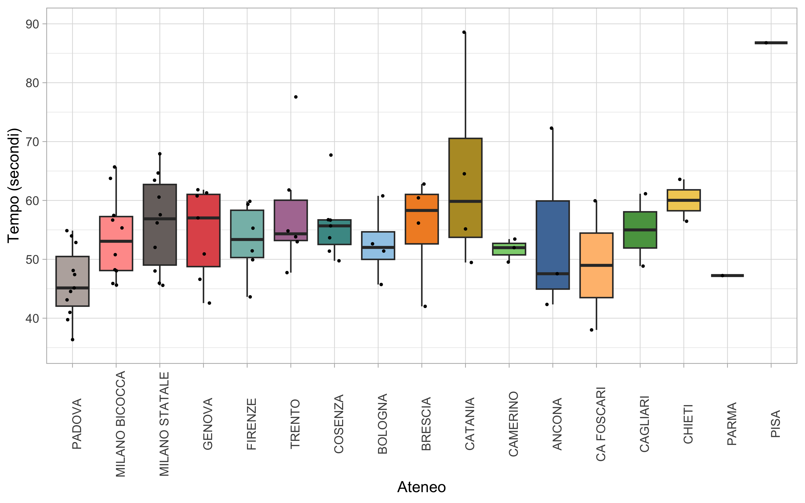
Tempi di arrivo per ateneo (Gigante, Femminile)
Ho rimosso 4 tempi anomali, ovvero superiori ai 100 secondi, per migliorare la leggibilità del grafico. Gli atenei sono stati ordinati considerando la graduatoria complessiva.
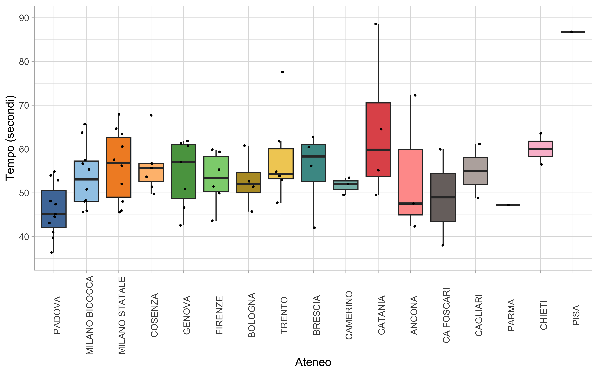
Numero di partecipanti e punteggio della squadra (Gigante, Femminile)
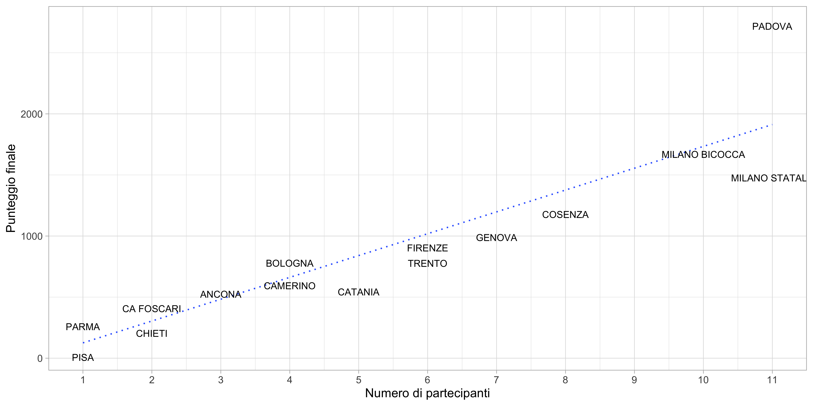
Numero di partecipanti per categoria (Gigante, Femminile)
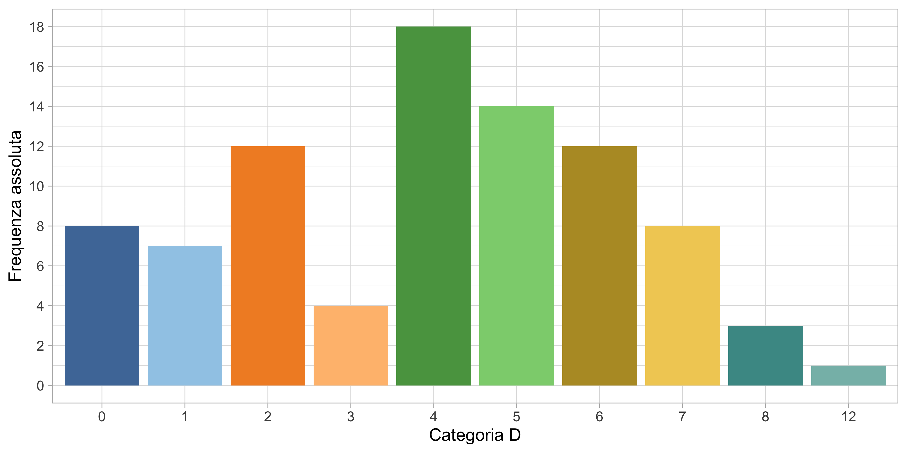
Tempi per categoria (Gigante, Femminile)
Ho rimosso 4 tempi anomali, ovvero superiori ai 100 secondi, per migliorare la leggibilità. La categoria D0 corrisponde a “MASTER D S”, mentre la categoria D12 sembra vuota perchè i tempi sono tutti superiori ai 100 secondi.
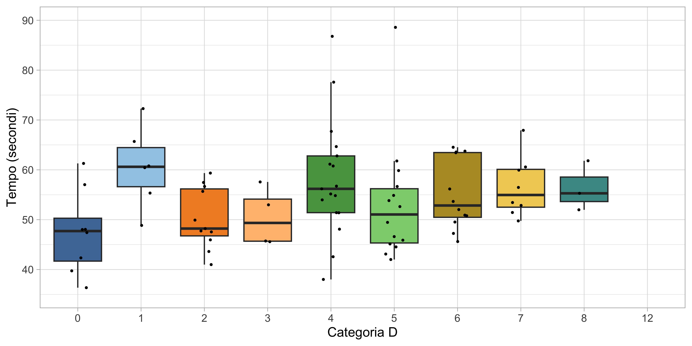
Slalom gigante maschile
Tempi di arrivo (Gigante, Maschile)
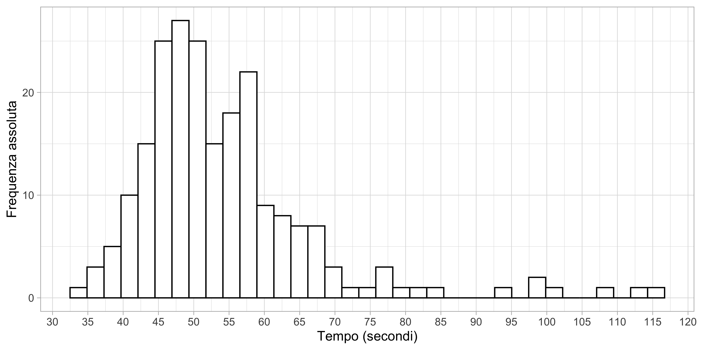
| Tempo migliore | Primo quartile | Tempo mediano | Terzo quartile | Tempo peggiore |
|---|---|---|---|---|
| 34.26 | 46.37 | 51.5 | 58.02 | 116.06 |
Numero di partecipanti per ateneo (Gigante, Maschile)
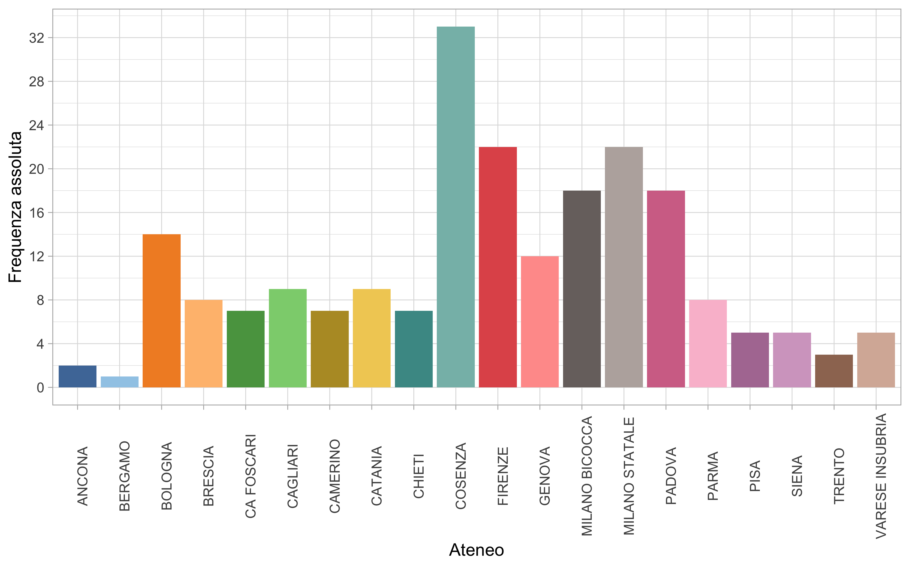
Tempi di arrivo per ateneo (Gigante, Maschile)
Gli atenei sono stati ordinati considerando la graduatoria complessiva.
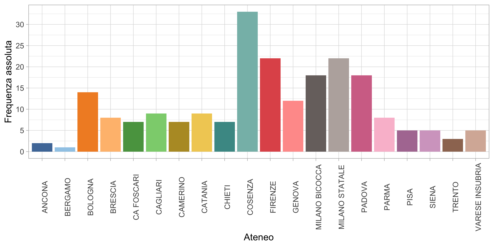
Numero di partecipanti e punteggio della squadra (Gigante, Maschile)
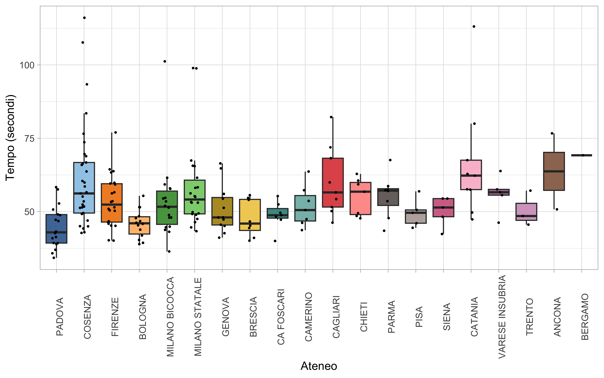
Numero di partecipanti per categoria (Gigante, Maschile)
La categoria 0 corrisponde a “MASTER S R”.
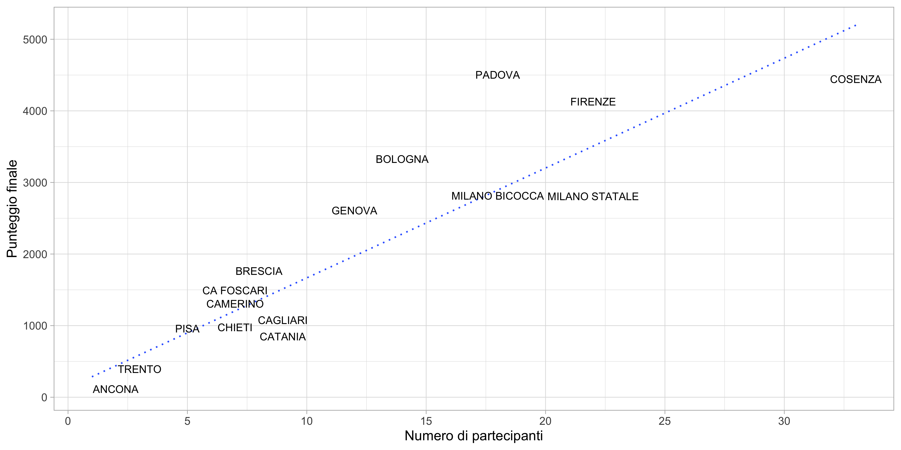
Tempi per categoria (Gigante, Maschile)
La categoria 0 corrisponde a “MASTER S R”.
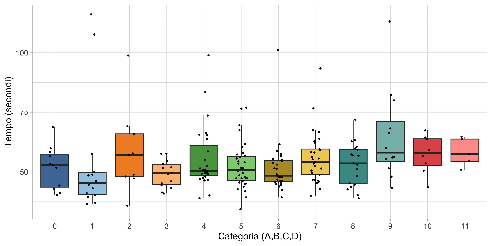
Fondo tecnica classica maschile
Tempi di arrivo (Fondo, Maschile)
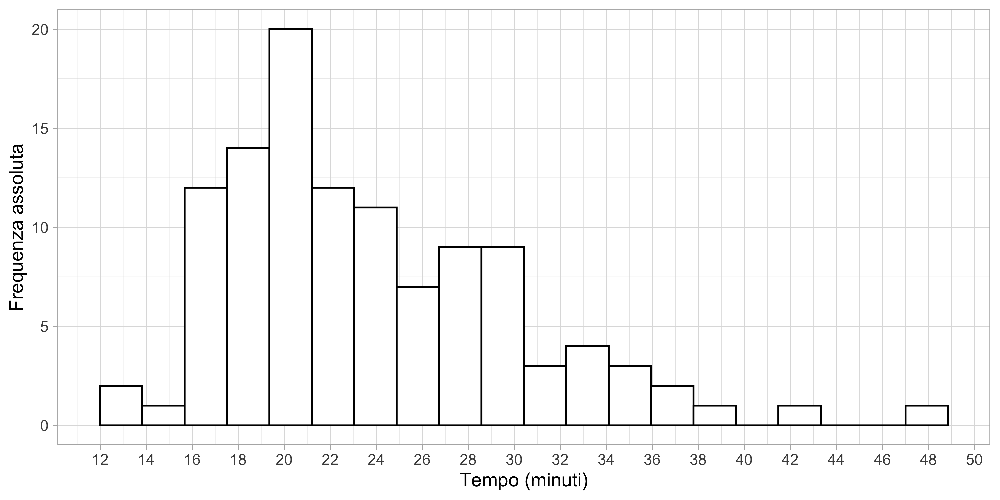
| Tempo migliore | Primo quartile | Tempo mediano | Terzo quartile | Tempo peggiore |
|---|---|---|---|---|
| 13 | 19 | 23 | 28 | 48 |
Numero di partecipanti per ateneo (Fondo, Maschile)
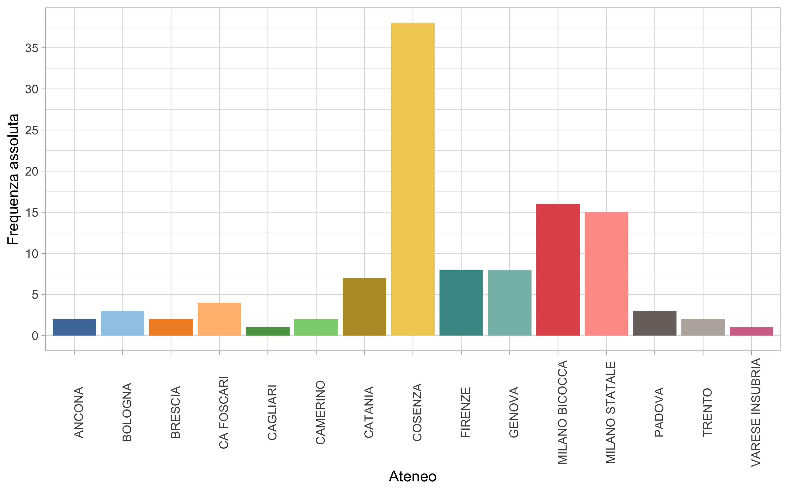
Tempi di arrivo per ateneo (Fondo, Maschile)
Gli atenei sono stati ordinati considerando la graduatoria complessiva.
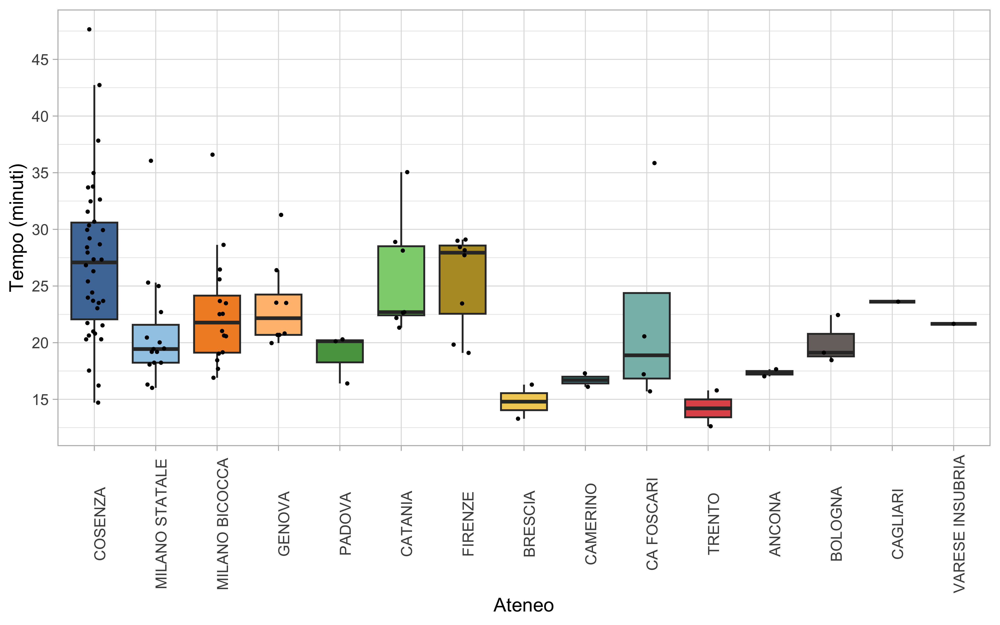
Numero di partecipanti per categoria (Fondo, Maschile)
La categoria 0 corrisponde a “MASTER S R”.
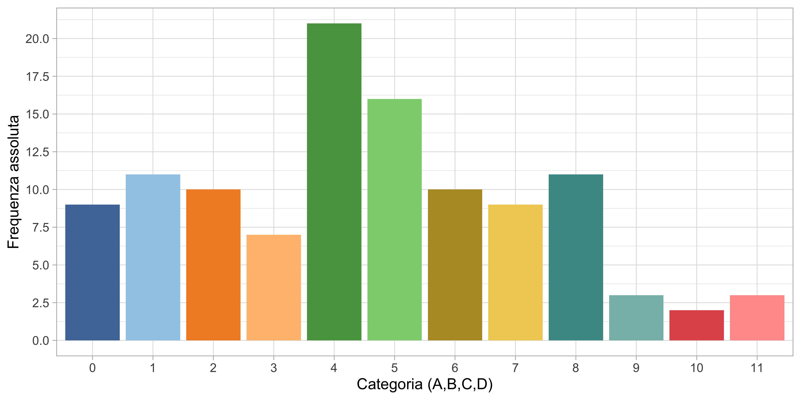
Tempi per categoria (Fondo, Maschile)
La categoria 0 corrisponde a “MASTER S R”.
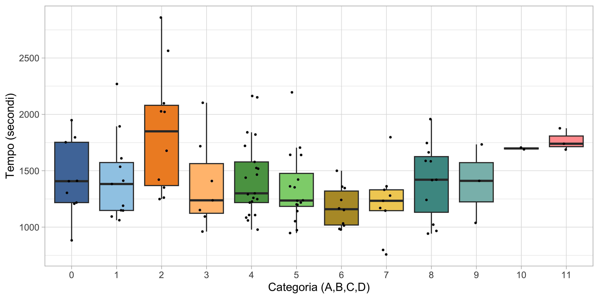